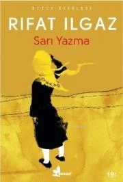
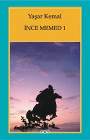
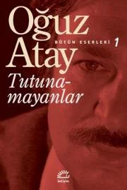
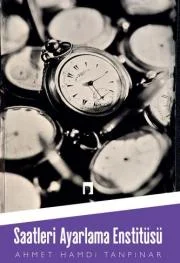
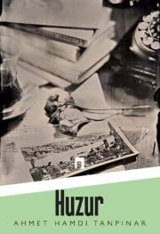
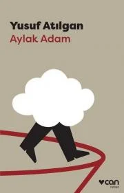

|
Sarı Yazma | Rıfat ılgaz  "Buraya niçin mi geldim? İnsandan, toplumdan yıldığım, korktuğum, kaçtığım için değil. |
İnce Memed 1 | Yaşar Kemal  Otuz iki yıllık bir zaman diliminde yazılan İnce Memed dörtlüsü düzene başkaldıran Memed'in ve insan ilişkileri, |
Tutunamayanlar | Oğuz Atay  Türk edebiyatının en önemli eserlerinden biri olan Tutunamayanlar'ı Berna Moran, " hem söyledikleri hem de |
|
Saatleri Ayarlama Enstitüsü | Ahmet Hamdi Tanpınar  Ahmet Hamdi Tanpınar'ın şiiri sembolist bir ifade üzerine kurulmuştur. Aynı anlatım tarzı romanlarına da zaman zaman sirayet eder. |
Huzur | Ahmet Hamdi Tanpınar  Huzur’un kahramanlarından Mümtaz, roman boyunca kendisini “huzur”a kavuşturacak bir “iç nizam”ı aramaktadır. Eserde hastalık, ölüm, |
Aylak Adam | Yusuf Atılgan  Düşünüyordu: “Çağımızda geçmiş yüzyılların bilmediği, kısa ömürlü bir yaratık yaşıyor. Sinemadan çıkmış insan. Gördüğü film ona bir şeyler yapmış. |